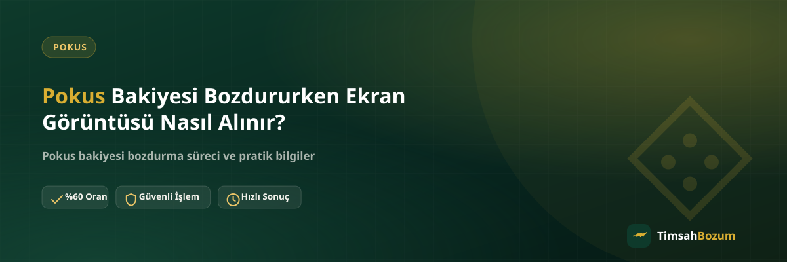

Pokus bakiyeni bozdurmak için WhatsApp'a yazdığında karşına çıkan ilk soru genelde aynıdır: "bakiye ekran görüntüsünü gönderebilir misin?" Bu görüntüyü nereden, nasıl ve hangi anda alman gerektiğini bilmek işlemi tek turda ilerletir. Bu yazıda ekran görüntüsünü adım adım nasıl çekeceğini, hangi ekranı açman gerektiğini ve bu konuda en çok karıştırılan noktaları anlatıyoruz.
Ekran Görüntüsü Neden İsteniyor?
Bozum işlemi, paylaşılan bilginin doğrulanabilir olmasına dayanır. Bakiyeni yazıyla belirtmek yerine ekran görüntüsüyle göstermen, karşı tarafın tutarı tek bakışta görüp hızlıca ilerlemesini sağlar. Pokus bozdurma sürecinde bu görüntü, bakiyenin gerçekten var olduğunu ve güncel tutarını gösteren tek pratik kanıt.
Pokus Bakiye Ekranı Hangi Uygulamadan Görüntülenir?
Pokus bakiyesi, kayıtlı olduğun hesabın bağlı olduğu uygulama veya web sayfası üzerinden görüntülenir. Bakiyeni görmek için önce giriş yapman gerekir; giriş yapmadan önbellekte kalmış eski bir ekran görüntüsünü kullanmak, karşı tarafın güncel tutarı görmesini engeller. Bu yüzden görüntü almadan önce oturumun açık ve bakiye sayfasının güncellenmiş olduğundan emin olmak ilk adım.
Hangi Ekran Açılıp Görüntülenmeli?
Alman gereken görüntü, Pokus bakiyeni gösteren ana ekran veya hesap/bakiye sayfası. Uygulamayı açtığında bakiyenin göründüğü sayfada durup, başka bir menüye geçmeden görüntüyü almak en doğrusu. Ödeme geçmişi veya işlem detayı gibi farklı sayfaların görüntüsü, bakiyeyi net göstermediği için yeniden istenebilir.
Doğru Ekran Görüntüsü Adım Adım Nasıl Çekilir?
Önce Pokus hesabına giriş yap ve bakiyenin göründüğü ekrana gel. Tutarın tam ve net göründüğünden emin ol, gerekirse sayfayı bir kez yenile. Ardından cihazının ekran görüntüsü alma tuş kombinasyonunu (çoğu telefonda ses azaltma + güç tuşu) kullanarak görüntüyü al. Son olarak görüntüyü açıp tutarın okunaklı çıktığını kontrol ettikten sonra WhatsApp'tan göndermeye hazır olursun.
Ekran Görüntüsü Ne Zaman Alınmalı?
Görüntüyü, WhatsApp'a yazmadan hemen önce almak en sağlıklısı. Birkaç saat veya gün önceden alınmış bir görüntü, o an hesapta hâlâ aynı bakiyenin olup olmadığını garanti etmez. Mesaj atmadan önce uygulamayı tekrar açıp bakiyeyi bir kez daha görüp görüntü alman, bilginin güncel olduğundan emin olmanın en basit yolu.
Hangi Cihazdan Alırsan Daha Güvenilir Olur?
Görüntüyü doğrudan bakiyenin bağlı olduğu kendi telefonundan veya tabletinden almak, başka birinin cihazından çekilmiş bir görüntüden daha güvenilir kabul edilir. Kendi cihazından alınan bir görüntü, doğrulama sırasında ek soru sorulma ihtimalini azaltır ve süreci kısaltır.
Görüntüyü Alırken Hangi Bilgileri Gizleyebilirsin?
Bakiye tutarı ve güncellik göstergesi dışında, ekranda görünen kişisel bilgileri (varsa ad soyad, iletişim bilgisi gibi alanları) karartman doğrulama sürecini etkilemez. Doğrulama için gereken tek şey bakiyenin net görünmesi; görüntünün çevresindeki fazladan bilgiyi gizlemek istersen bu tamamen senin tercihindir ve işlemi yavaşlatmaz.
Ekran Görüntüsü Olmadan Bozum Yapılır mı?
Ekran görüntüsü olmadan da bakiye tutarını yazıyla belirtebilirsin, ancak bu genellikle ek doğrulama istenmesine yol açar ve süreci bir tur uzatır. Baştan görüntüyü hazırlayıp ilk mesajla birlikte göndermek, işlemi tek turda ilerletmenin en pratik yolu.
Sık Yapılan Ekran Görüntüsü Hataları Nelerdir?
En sık karşılaşılan hatalar arasında eski bir görüntüyü tekrar kullanmak, ekranın bir kısmını kesip tutarı görünmez hale getirmek ve bulanık bir görüntü göndermek var. Bu hataların hiçbiri işlemi iptal etmez, sadece doğrulama aşamasını uzatır çünkü karşı taraf görüntüyü yeniden ister.
Görüntüyü Kimle Paylaşmalısın?
Ekran görüntüsünü yalnızca resmi WhatsApp hattımızdan (+90 543 887 21 71) paylaş. Instagram DM'i veya farklı bir numara üzerinden gelen taleplere görüntü göndermeden önce numarayı doğrula; sitede yayınlanan numara dışında bir yerden ulaşıldığını düşünüyorsan bilgi paylaşmadan önce resmi hattan teyit al.
Ekran Görüntüsü Yerine Ekran Kaydı veya Fotoğraf Gönderilir mi?
Bakiye ekranının doğrudan fotoğrafı (örneğin başka bir telefonla çekilmiş) yerine, cihazın kendi ekran görüntüsü alma özelliğini kullanmak her zaman daha okunaklı bir sonuç verir. Fotoğrafta yansıma, bulanıklık veya açı sorunu yaşanabilir, bu da tutarın net görünmesini zorlaştırır. Ekran kaydı (video) ise bu işlem için gerekli değil; tek bir net görüntü doğrulama için yeterli, video göndermek süreci uzatmaz ama gerek de duymaz.
Birden Fazla Pokus Hesabın Varsa Ne Yapmalısın?
Birden fazla Pokus hesabın varsa ve her birinde bakiye bulunuyorsa, hangi hesabın görüntüsünü gönderdiğini mesajında belirtmen karışıklığı önler. Her hesap için ayrı bir görüntü almak ve bunları tek mesajda birlikte iletmek, karşı tarafın hangi tutarın hangi hesaba ait olduğunu anlamasını kolaylaştırır. Farklı hesapların görüntülerini karıştırıp göndermek, doğrulama aşamasında ek soru sorulmasına yol açabilir.
Ekran görüntünü hazırladıktan sonra WhatsApp hattımıza yazarak güncel oranı teyit edip işlemini başlatabilirsin.
Sık sorulan sorular
İlgili Yazılar
- Pokus Bakiye Ekran Görüntüsü Nasıl Doğru Paylaşılır?
- Pokus Bakiyesi Bozdurmadan Önce Kontrol Etmen Gerekenler
- Pokus Bakiyesi Nedir, Nasıl Oluşur?
Bakiyeni bozdururken paylaştığın güncel oran ve ekran görüntüsünün doğruluğu, işlemi hızlandıran en önemli adım. Doğru hazırlanmış bir görüntüyle WhatsApp'tan yazdığında süreç genelde tek turda ilerler ve gereksiz bilgi tekrarı gerekmez.